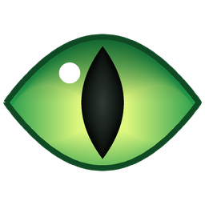

ZOOMIES
הגדלת כל המסך ב-Windows בצביטה של שתי אצבעות, כמו בטלפון.
על משטח המגע ועל מסך מגע.
הורדה
גרסת בטא 1. קובץ אחד, Zoomies.exe, בערך 1.3 מגה-בייט. לא צריך להתקין.
איך מפעילים בפעם הראשונה
- לוחצים על הכפתור הורדת Zoomies ושומרים את הקובץ.
- פותחים את התיקייה הורדות ולוחצים פעמיים על Zoomies.exe.
- בפעם הראשונה Windows עשוי להציג חלון כחול: "Windows הגן על המחשב שלך". זה קורה לכל תוכנה חדשה שעוד לא מוכרת ל-Windows.
- לוחצים על הקישור מידע נוסף.
- לוחצים על הכפתור הפעל בכל זאת.
- אם הדפדפן מזהיר על הקובץ בזמן ההורדה, בוחרים שמור או שמור בכל זאת.
- עין ירוקה גדולה נפתחת על המסך, ונשמעת או מוצגת ההודעה "זומיז מופעל". מעכשיו אפשר לצבוט כדי להגדיל.
בהפעלה הראשונה Zoomies יוצרת קיצור בשולחן העבודה. כשסוגרים אותה, כל ההגדרות של המסך ושל Windows חוזרות למה שהיה קודם.
מה צריך
- Windows 11, גרסה 24H2 או חדשה יותר.
- משטח מגע (טאצ'פד) או מסך מגע. אפשר להגדיל גם עם העכבר והמקלדת.
- עובדת לצד קוראי המסך NVDA ו-JAWS.
- רוצים ש-Zoomies תיפתח לבד בכל כניסה ל-Windows? בתפריט של Zoomies (Ctrl+Alt+M) בוחרים זומיז נפתח מעצמו בכניסה ל-Windows.
הפעולות העיקריות
| מה עושים | מה קורה |
|---|---|
| צביטה בשתי אצבעות | הגדלה והקטנה של כל המסך, עד פי 10 |
| גרירה בשתי אצבעות | כשהמסך מוגדל: הזזת התצוגה. בקצה המסך הדף ממשיך להיגלל |
| Win + גלגלת העכבר | הגדלה והקטנה עם העכבר |
| Win + + / - | הגדלה והקטנה מהמקלדת |
| Ctrl+Alt+Z | הפעלה וסגירה של Zoomies |
| Ctrl+Alt+X | השהיה וחזרה ל-100%. לחיצה נוספת מחזירה את ההגדלה |
| Ctrl+Alt+M | תפריט ההגדרות |
| Ctrl+Alt+T | סרגל הכלים |
| Ctrl+Alt+I | ניגודיות גבוהה של Windows |
| לחיצה קצרה על Ctrl | טבעת שמראה איפה סמן העכבר |
משוב ובעיות
זו גרסת ניסיון, והמשוב שלכם עוזר לנו לשפר אותה. משהו לא עובד, או יש רעיון?
טופס המשוב יתווסף כאן בקרוב.